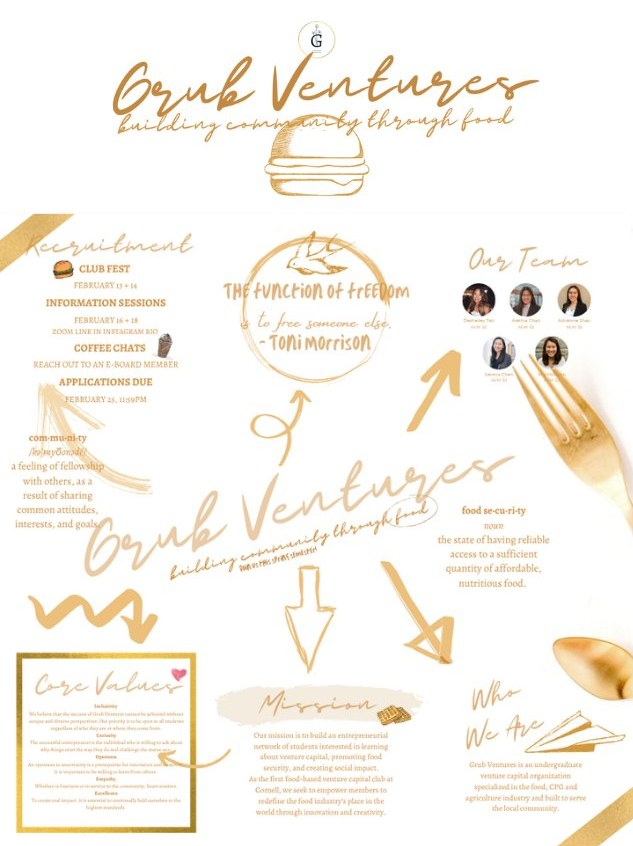
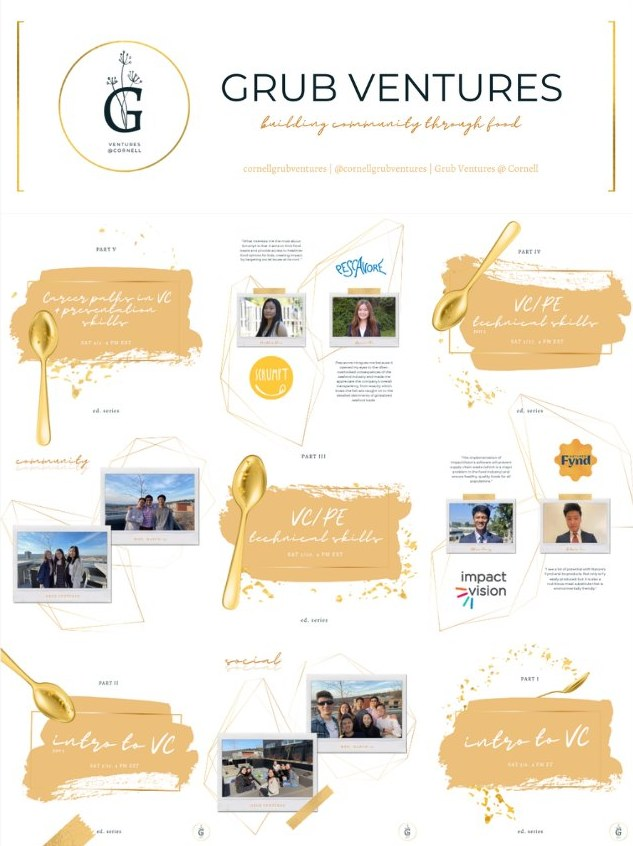
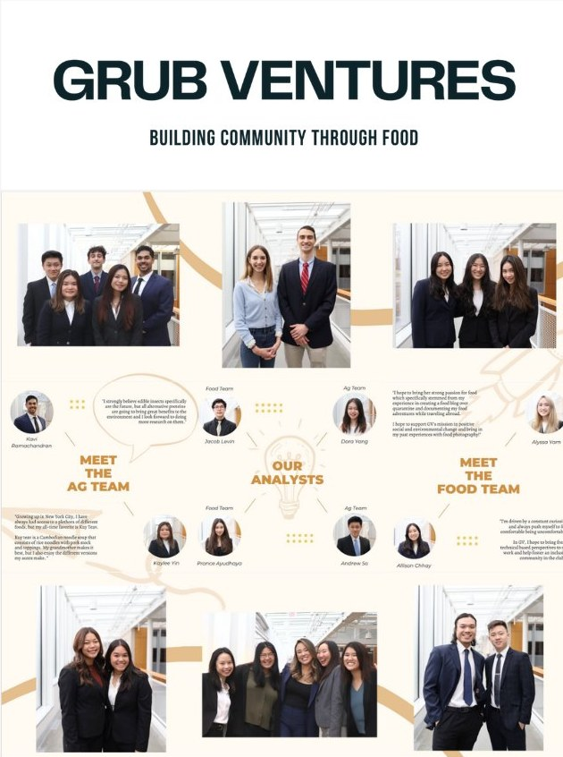
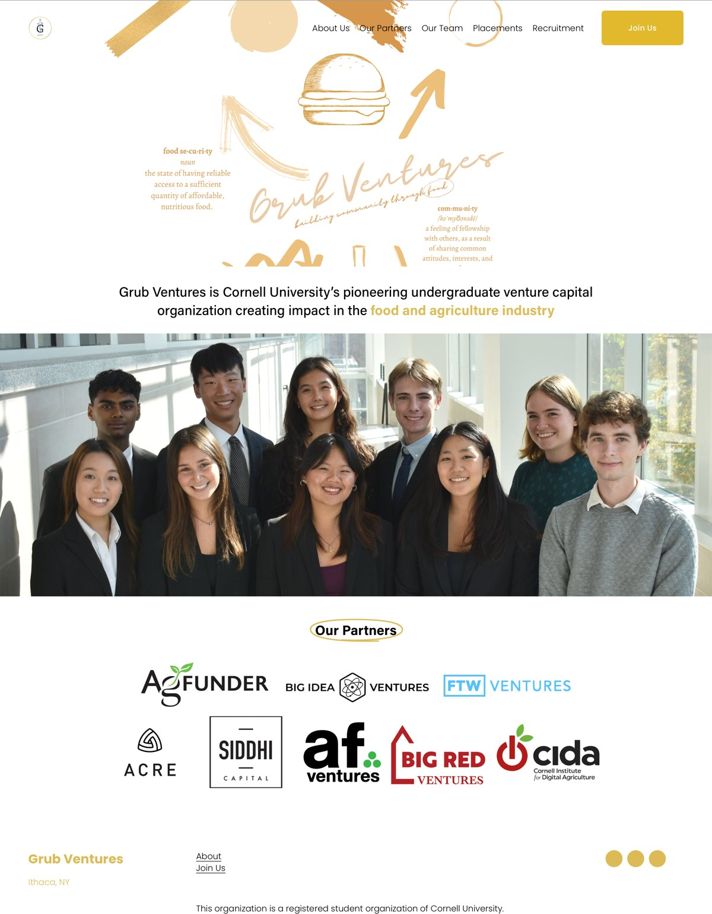
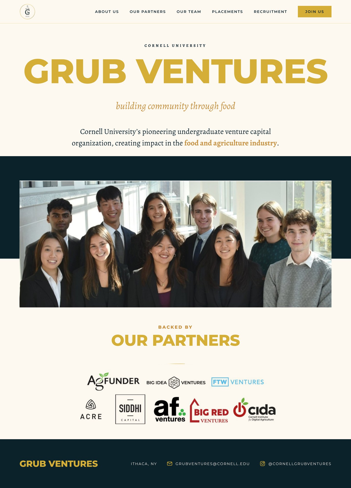
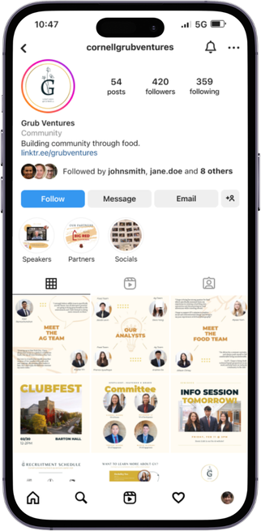
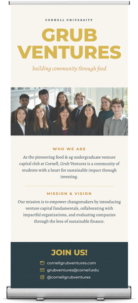
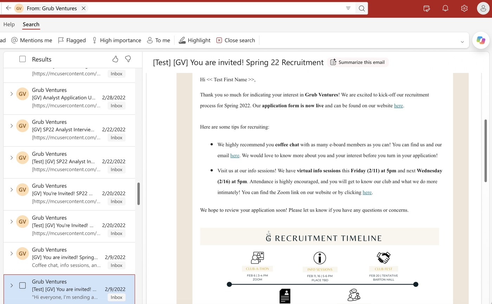
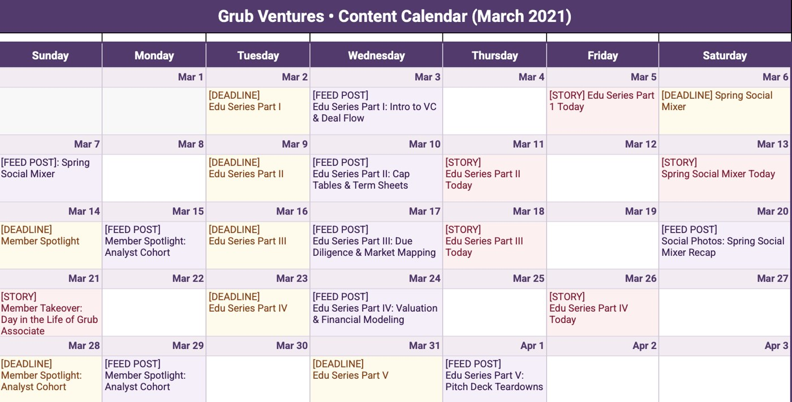

Brand & marketing
Grub Ventures
Building a brand and marketing recruiting pipeline for a new food x venture capital club.
Outcome
+190% Instagram engagement and +143% reach in 3 weeks of recruitment, and +50% applications the next semester.
- Project
- Student organization
- Feb 2021 – Jun 2022
- Team
- Alethia Chan
- Serena Chen
- Mia Millstein
- Adrienne Shao
- Deshelley Teo
- My role
- Brand identity
- Content strategy
- Digital marketing
The problem
At Cornell, food and venture capital lived in separate worlds.
VC clubs were very finance-focused, the food science club was very technical, and the two groups rarely mixed. I studied food science but was curious about VC, so when I saw our founder’s Instagram post about a new food x VC club, I messaged her. After a coffee chat, I joined the founding team to run recruitment and marketing.
Our challenge: a brand-new club with no marketing yet had to reach students in both worlds and convince them to apply.
Iterating the brand
I inherited V1, redesigned it as V2, and sharpened it into V3 once we saw who was applying.



Meeting students where they are
I wanted anyone curious about food and VC to find us wherever they already were: our website, Instagram, their inbox, or a recruitment fair.
Website


Hover over a screen to scroll through the full page.Tap a screen to scroll through the full page.




What changed
Both Instagram numbers compare against the 3 weeks before recruitment.
Reflection
Our founding team was all women, and we picked what looked good to us, so nobody flagged that V2 felt too dainty until we saw the applicant pool. Next time, I’d define our target audience first and design the brand for them, then turn it into a guideline so the people after me could keep it consistent.